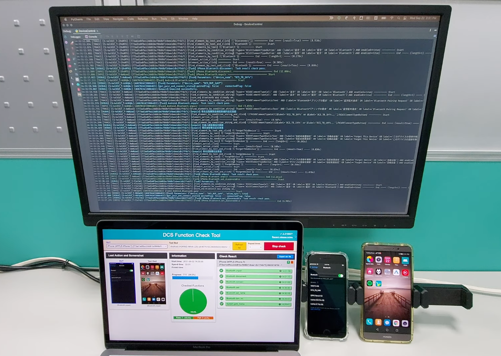
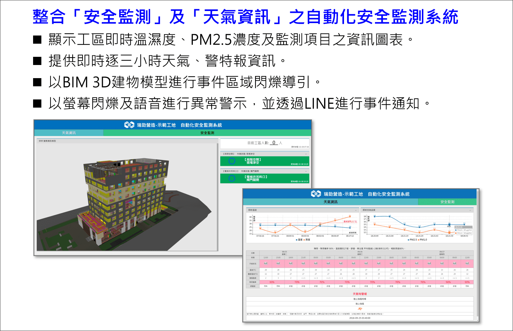
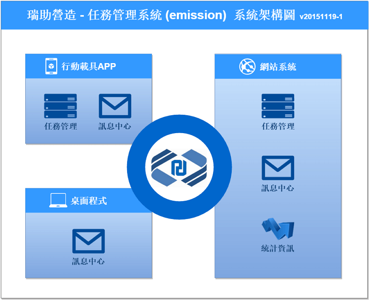
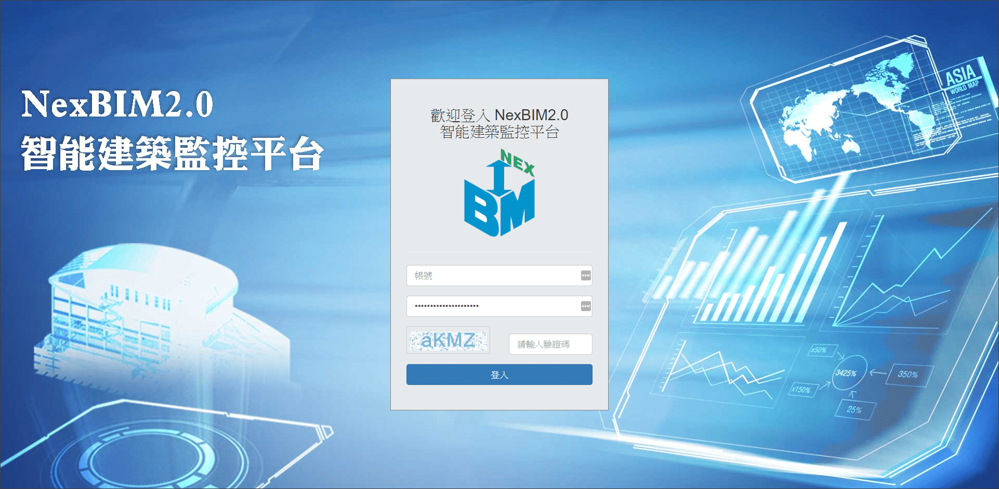
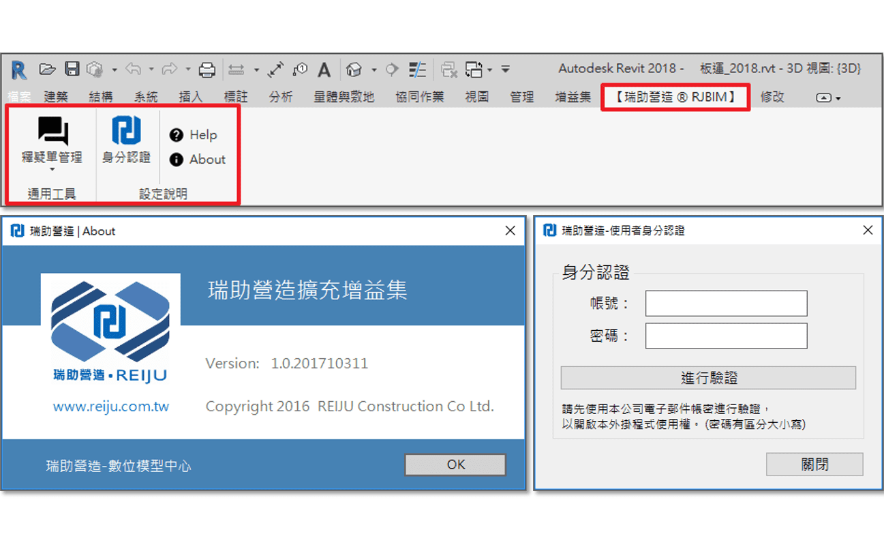
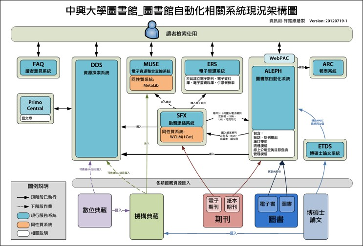
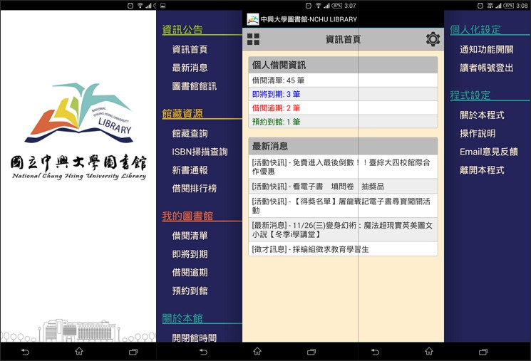
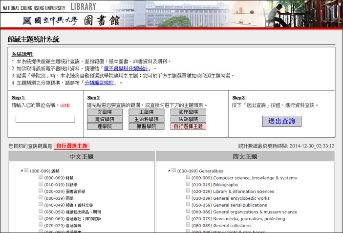
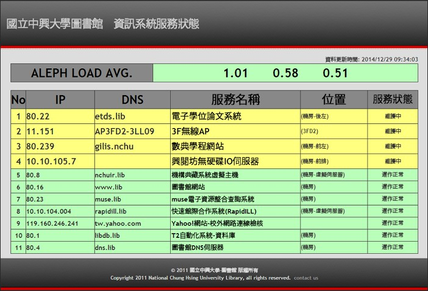

技能專長
主要技能專長。
程式設計
年
自動化測試開發
年
IoT感測應用
2 年
APP及通訊應用
3 年
程式設計
應用系統:
- Python
- C#
- Ruby
網站系統:
- PHP
- ASP
- JavaScript
- JQuery
- Bootstrap
- ASP.NET
資料庫:
- MySQL
- MS SQL
- Firebase
- MongoDB
- JSON
- Oracle
自動化測試開發
- Appium
- Selenium WebDriver
- Android ADB
IoT感測應用
- Node.js
- Webduino
- CircuitPython
- nanoESP32-S2
APP及通訊應用
- Appcelerator Studio
- Xcode
- Line Bot
- WebSocket
版本控制及專案管理
- Git
- Trello
- Microsoft Project
- Jenkins
其它工作技能
- BIM
- Revit API
- 電腦機房管理
- 網路管理
語言能力
- 台語
- 英語
工作經歷
從事程式設計、研發及機房網路管理相關職務已有 年實務經驗。
百佳泰股份有限公司
工程師
2019 - 2021業務職掌
- 設備控制系統建置及維護
- 電子商務網站系統建置
技能工具與應用
- Python (設備控制系統開發)
- JavaScript, JQuery, Bootstrap (網頁前端)
- ASP.NET C#, nopCommerce, 綠界第三方支付 (電子商務網站)
- Firebase, MongoDB, MS SQL (資料庫)
- Appium, Selenium WebDriver (Android, iPhone設備控制)
- Android ADB (Android設備控制)
- Apple Developer, Xcode (iPhone appium-webdriveragnet)
- PyCharm, Visual Studio Code (程式開發)
- Line Bot (即時訊息通知)
- IoT (推拉式電磁鐵自動點擊)
- FastAPI, WebSocket (API服務)
- OpenCV (螢幕雜訊檢測)
- RSA非對稱式加解密 (軟體授權認證)
- Git (版本控制)
重要事蹟
- 建構跨平台(Android及iPhone)之設備控制系統。
- 建構以WebSocket API為基礎之非同步執行架構。
- 建立RSA非對稱式加解密授權認證架構。
- 以Firebase及Line建構即時Log回傳及訊息通報系統。
瑞助營造股份有限公司
專員
2015 - 2019業務職掌
- BIM與新技術應用研發
- 任務管理系統開發、管理與維護
- 雲端專案管理平台管理及工地使用輔導
- 使用者軟硬體維護
- 金質獎、金安獎、CSR…等各類參獎作業支援
技能工具與應用
- PHP (任務管理系統後端)
- C# (Revit API 開發)
- JavaScript, JQuery, Bootstrap (網頁前端)
- Node.js, IoT, Webduino, LoRa (工區自動化安全監測系統)
- Appcelerator Studio (任務管理系統APP)
- Firebase, MySQL (資料庫)
- Line Bot (即時訊息通知)
- Autodesk Revit, BIM (建築模型建置)
- Bentley ContextCapture, DJI空拍機 (實景三維建模)
- Trello (問題追蹤)
- Google Analytics (使用分析)
- Git (版本控制)
重要事蹟
- 承辦以BIM為基礎之「NexBIM智能建築監控平台」，發揮BIM建築全生命週期效益。
- 結合BIM、IoT感測及LoRa傳輸技術開發「工區自動化安全監測系統」，提升工區職業安全防護效益。
- 導入「實景三維建模技術」，由既有量體式環境模擬提升至現地實景虛實整合。
- 開發「Revit釋疑單管理系統」，提升營造工程BIM釋疑及追蹤管理效率。
- 開發「任務管理系統」，以網站系統、行動載具APP及桌面程式架構，系統化各項工作任務指派、回報及通知作業，強化企業競爭力。
- 導入Trello、Bitbucket及Google Analytics服務，強化系統開發問題追蹤、版本控管及使用分析。
國立中興大學-圖書館
技術師
2009 - 2015業務職掌
- 資訊機房規劃、管理與維護
- 全館網路規劃、管理與維護
- 圖書館自動化系統管理、維護與加值應用開發
- 館內各類資訊系統管理與維護
- 系統分析與程式開發
- 維護案及資訊設備採購業務
- 館員資訊教學及訓練
- 圖書館相關資訊業務諮詢服務
技能工具與應用
- Ruby, PHP (館藏主題統計系統、門禁資訊系統後端)
- JavaScript, JQuery, Bootstrap (網頁前端)
- Appcelerator Studio (中興大學圖書館APP)
- MySQL, Oracle (資料庫)
- Google Analytics (使用分析)
- Git (版本控制)
- 電腦機房及網路管理
重要事蹟
- 參與機構典藏計劃，促使中興大學於西班牙世界網路大學排名之SCHOLAR項目由2009年7月的804名前進至2010年1月的全球第3名。
- 於2010至2011年承辦「中興大學圖書館自動化系統軟硬體更新建置案」，並於2011年順利完成圖書館「自動化系統」、「資源探索系統」、「電子資源系統」、「讀者意見系統」…等系統更新建置，並獲校方頒贈個人績效獎金。
- 建立「網站服務監測系統」，監測全館一百餘項資訊系統及設備服務狀態，主動發送Hangouts、Email及手機簡訊，即時掌握各類服務狀態。
- 完成資訊機房虛擬化工程、館藏主題統計、電子簽到、門禁資訊系統、電子資源url有效性檢測…等系統，提供讀者高度整合之資訊服務環境。
- 管理圖書館自動化系統成果卓著，獲邀於2014年11月於北、中兩地之「圖書館服務再進化研討會」發表演說分享管理及加值應用經驗。
- 開發中興大學圖書館APP，為圖書館個人化行動服務之重要平台。
- 擔任校務會議代表及勞資會議代表，積極參與公眾服務。
威達雲端電訊股份有限公司
程式設計工程師
2008 - 2009業務職掌
- 網站系統管理、維護與開發
※ 午陽集團企業網站 ※ 威達超舜官方網站 ※ 威達超舜VeeTV網站
※ 台中線上網站 ※ 台中縣-無線寬頻入口網站 ※ 社區大樓網站 - 午陽集團人才招募網站，系統開發、管理與維護
凱立國際資訊股份有限公司
程式設計師
2007 - 2008業務職掌
- 網站系統管理、維護與開發
※ 旺來數位閱聽電子書商務網站
※ GeniZ多媒速排王-線上多媒體上稿、排版系統 - 版型組配及管理系統，系統開發、維護
- 電子書內部製程自動化技術支援
中央研究院-語言學研究所
研究助理
2006 - 2007業務職掌
- 語言分析系統維護與開發
- 伺服環境、系統及作業電腦管理
- 語料庫管理及應用開發
※ 中央研究院十億字語料庫 ※ 現代漢語平衡語料庫
※ 五百萬語料庫 一千萬語料庫 - Wordnet, Ontology, Semantic Web 相關研究技術開發與支援
- 資料視覺化相關研究技術應用開發
專案經歷
代表性之專案經歷。
-
 設備管理系統
系統分析與程式開發

建構跨平台(Android及iPhone)之設備控制系統。
建構以WebSocket API為基礎之非同步執行架構。
建立RSA非對稱式加解密授權認證架構。
以Firebase及Line建構即時Log回傳及訊息通報系統。 -
 工區自動化安全監測系統
系統分析與程式開發
結合BIM與IoT感測技術開發, 提升工區職業安全防護效益。
-
 任務管理系統
系統分析與程式開發
以網站系統、行動載具APP及桌面程式架構，
系統化各項工作任務指派、回報及通知作業，強化企業競爭力。 -
 NexBIM智能建築監控平台
系統分析與管理維護
以BIM 3D模型為基礎的新一代設施維運平台。
延續規劃設計及施工階段之BIM模型，發揮BIM建築全生命週期之應用效益。 -
 Revit釋疑單管理系統
系統分析與程式開發
建構在Autodesk Revit上的BIM釋疑單管理系統，
提升營造工程BIM釋疑及追蹤管理效益。 -
 中興大學圖書館自動化相關系統
管理、維護與加值應用開發
自動化系統軟硬體更新建置案
資源探索系統
館藏查詢系統
電子資源系統
讀者意見系統 -
 中興大學圖書館APP
系統開發及管理維護
圖書館個人化行動服務之重要平台，提供以下資訊服務：
最新消息及借閱訊息推播通知。
借閱紀錄查詢及續借功能。
透過ISBN掃描或關鍵字查詢館藏。
新書通報、借閱與預約排行榜資訊。
圖書館開閉館時間、樓層說明等資訊。 -
 中興大學圖書館-各類應用系統
系統建置、管理與維護
依讀者及館內同仁工作需求，
整合館內各類系統資源、建置各類型應用系統。 -
 中興大學圖書館-網站服務監測系統
系統建置、管理與維護
監測全館一百餘項資訊系統及設備服務狀態，
主動發送Hangouts、Email及手機簡訊，即時掌握各類服務狀態。
學歷及社團經歷
秉持著對資訊科技的熱情，在資訊這條路由高職、二專、插大至研究所畢業。
碩士
大葉大學
資訊管理研究所
2003 - 2008
- 華爾滋數位學習團隊負責人
- 提升青少年專案計畫組長
- 提升大學基礎教育計畫助理
大學
長榮大學
資訊管理學系
2000 - 2003
- 轉學生聯誼會會員
- 轉學生聯誼會資訊長
- 轉學生聯誼會顧問
- 聖樂團團員
二專
南開工商專
資訊管理科
1997 - 2000
高職
台中家商
資料處理科
1994 - 1997
- 心吟合唱團團員
- 心吟合唱團風紀股長
- 心吟合唱團顧問
研究及演說發表
不只是資訊人員，也具有學術研發及演說發表經驗。
研究興趣
- Data Visualization
- Data Clustering
- Query Expansion
- Ontology & Semantic Web
- Corpus Related Applications
- Wordnet Related Applications
- E-Learning & SCORM
演說及學術發表
- Wu, Chih-ming & Hsin-Lung, Liu & Huang, Long-mao & Lin, Jin-fa & Hsu, Ming-wei. (2018). Integrating BIM and IoT technology in environmental planning and protection of urban utility tunnel construction. 198-201. 10.1109/AMCON.2018.8615004.
- 洪嘉馡、黃居仁、許銘維。2007。以中文十億詞語料庫為基礎之兩岸詞彙對比研究。第十九屆自然語言與語音處理研討會(Rocling 2007)。台灣大學。2007.9。
- Ming-Wei Xu, Jia-Fei Hong, Chu-Ren Huang. 2008. CWN-Viz: Semantic Relation Visualization in Chinese Wordnet. Fourth Global WordNet Conference (GWC 2008). Szged, Hungary. January, 2008.
- 碩士論文: 基於圖形分群法的視覺化資訊檢索輔助系統之設計(Design of a Visualized Information Retrieval Assistance System Based On Graphic Clustering)>
- 許銘維。2014。Aleph開放架構-系統管理及加值應用經驗分享。圖書館服務再進化研討會。中興大學、世新大學。2014.10。
聯絡資料
若您對銘維的學經歷感到興趣，不管是否為職務邀約，都歡迎您Email跟銘維交流、讓我們彼此都有成長的機會。
(謝絕任何保險傳銷事務，敬請見諒。)
許銘維 (Javan)
專 業
熱 情
誠 信
積 極
當 責
創 新
學 習